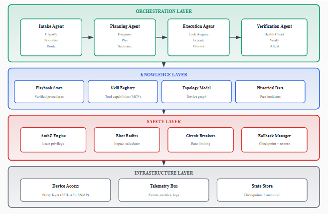

今天的 AI / Agent 早报
2026-06-09 · 信息截止：11:00 CST（03:00 UTC）
今日重点：生产级 Agent 架构 · GitHub 三日净增长 · OpenAI 官方视频动态
Autonomous Incident Resolution at Hyperscale: An Agentic AI Architecture for Network Operations
Agent architecture Multi-agent orchestration Progressive autonomy Safety boundaries
English overview
对应中文翻译
核心架构
编排层包含 Intake、Planning、Execution、Verification 四类 Agent；知识层提供 playbook、技能注册、拓扑模型和历史数据；安全层实施最小权限、爆炸半径、熔断和回滚；基础设施层封装设备、遥测和状态存储。
值得借鉴
将 Agent 推理与技能执行分离；技能具备类型化接口、权限要求、幂等保证和沙箱。所有动作先做确定性安全检查，关键决策可要求多模型共识，验证失败自动回滚。
报告结果
作者报告：成熟故障类别自动解决率超过 90%，解决时间从小时级降低到分钟级；误报式修复低于 5%，且安全框架避免了客户可见影响。
主要局限
未公开样本规模、故障类别明细、基线构造、统计区间、代码或可复现数据；仍无法覆盖长尾及跨领域故障。监管、责任归属与审计问题也未被纯技术机制完全解决。
论文全部图表
PDF 共识别出 1 个表格和 6 张图，以下按论文顺序完整附上。

Table I · Progressive Autonomy Levels
| 级别 | 名称 | 描述 |
|---|---|---|
| 0 | Advisory / 建议 | Agent 建议动作，由人类执行。 |
| 1 | Supervised / 受监督 | Agent 在人类预先批准后执行。 |
| 2 | Monitored / 受监控 | Agent 自主执行，人类事后审核。 |
| 3 | Autonomous / 自主 | 对已批准类别无需人类参与即可执行。 |
| 4 | Self-improving / 自我改进 | Agent 可依据执行结果改进自身操作流程。 |
过去三天 AI / Agent 项目 Star 净增长 Top 5
| # | 项目 | 用途 | 当前 star | 三日净增 | 昨日测试后变化 | 语言 | 最近更新 UTC |
|---|---|---|---|---|---|---|---|
| 1 | JimLiu/baoyu-design | 把 Claude Design 作为 Agent Skill 本地运行，生成 UI、原型和演示文稿。 | 531 | +531 | +78 | JavaScript | 2026-06-09 02:44 |
| 2 | amElnagdy/guard-skills | 面向 coding agents 的质量门禁 skills，发现 AI 生成代码、测试和文档中的失效模式。 | 474 | +474 | +61 | 未标注 | 2026-06-09 02:56 |
| 3 | GordenSun/GordenSuperPPTSkills | 使用 GPT 生成图片风格 PPT，再转换为可编辑 PPTX 的 Agent Skill。 | 439 | +439 | +192 | Python | 2026-06-09 02:55 |
| 4 | adamallcock/codex-chatgpt-control | 让 Codex agents 控制可见 ChatGPT 网页会话的非官方 SDK。 | 159 | +159 | +36 | JavaScript | 2026-06-09 02:34 |
| 5 | ApodexAI/AgentHarness | 用于在公开深度研究 benchmark 上评估 Apodex-1.0 的 Agent Harness。 | 49 | +49 | 昨日未入快照 | Python | 2026-06-09 02:49 |
三日窗口起点约为 2026-06-06 11:00 CST。上述仓库均在窗口起点后创建；净增值为从创建时的 0 star 到查询时当前 star 的净变化。查询时间约为 2026-06-09 10:56 CST。
OpenAI / Anthropic 官方动态
检查窗口：自昨天测试稿截止时间 2026-06-08 20:45 CST 起。
OpenAI
技术博客 / 研究 / 开发者更新
未发现新的技术博客、研究文章或开发者更新。
窗口内发布了一条非技术公司动态：Confidential submission of draft S-1 to the SEC（2026-06-08 14:00 UTC），确认已秘密提交 S-1 草案；发布时间及后续行动尚未确定。
官方视频
发现 3 个新视频。
主题集中在企业采用、Codex 工作流，以及 GPT-5.5 在网络安全和资产管理中的落地案例。
- Intelligence At Work - Enterprise Readiness · 2026-06-08 21:51 UTC
概述 OpenAI 企业产品路线：ChatGPT 与 Codex 的统一体验、六类角色 Agent Plugins、Annotations、Sites，以及企业级 AI 转型。 - Palo Alto Networks Moves Faster with GPT-5.5 · 2026-06-08 18:06 UTC
介绍 Palo Alto Networks 使用 GPT-5.5 与 Codex 改进网络安全漏洞报告，并借助并行工具调用提升 token 效率。 - Codex Unlocks Next Level Intelligence for Balyasny Asset Management · 2026-06-08 14:38 UTC
介绍 Balyasny Asset Management 在投资研究、编码和后台自动化中部署 Codex 与 GPT-5.5 的案例。
Anthropic
来源与方法
- 论文发现：arXiv API 查询；论文正文与图表来自 作者上传 PDF。
- 论文图表：PDF 共识别 1 表、6 图。表格按原文转为 HTML，图片从 PDF 原始对象抽取。
- GitHub：使用 GitHub Search API 与各仓库 REST API。只纳入三日内新建的公开项目，因此三日净增等于当前 star 数。
- 昨日测试后变化使用 2026-06-08 测试稿快照：baoyu-design 453、guard-skills 413、GordenSuperPPTSkills 247、codex-chatgpt-control 123。
- OpenAI：官方 News RSS、官方 YouTube RSS。
- Anthropic：官方 Newsroom、官方 YouTube RSS。
- 限制：GitHub star 会持续变化；GitHub 搜索与主题筛选可能遗漏未使用相关关键词的项目；论文结果为作者报告，未在本早报中独立复现。
本次 GitHub Star 快照
2026-06-09 10:56 CST · baoyu-design 531 · guard-skills 474 · GordenSuperPPTSkills 439 · codex-chatgpt-control 159 · AgentHarness 49 · DeepX 38